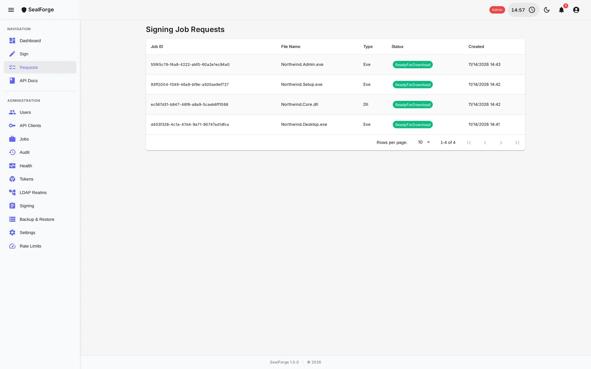
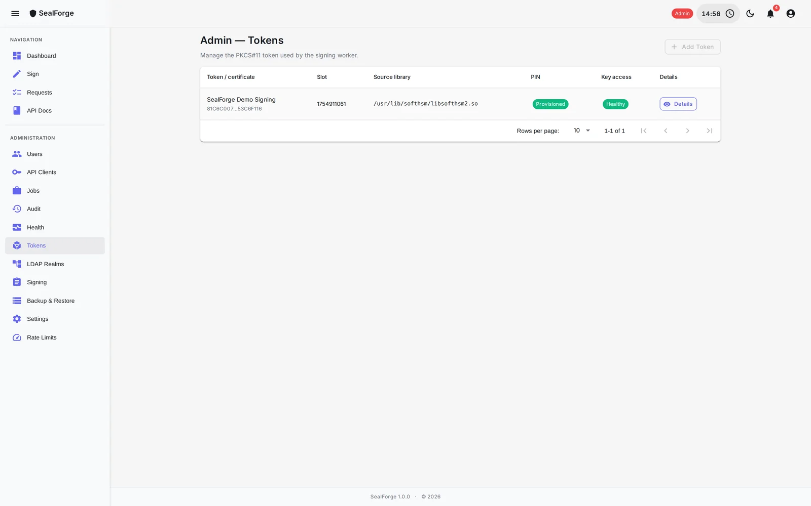
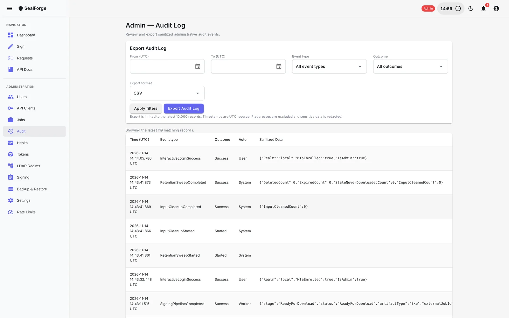

Keys stay in hardware
Private keys are generated and used inside your token or HSM. SealForge asks the PKCS#11 provider for a signature; it never imports, wraps or exports key material.
Self-hosted code signing · PKCS#11
SealForge is a self-hosted signing platform that runs on your own infrastructure. It drives the token, smart card or HSM you already own, signs and verifies your artifacts, and records every action — without ever exporting a private key.

A hosted signing service means your artifacts and your authorization decisions live somewhere else. SealForge runs where your keys already are.
Private keys are generated and used inside your token or HSM. SealForge asks the PKCS#11 provider for a signature; it never imports, wraps or exports key material.
Artifacts, the job queue and the audit trail live in your PostgreSQL database and your filesystem. No vendor account, no upload to a third party.
Submission, authorization, token selection, signing, timestamping, verification and download are recorded as job events and audit records.
The web application and the signing worker share a queue and a database, but only the worker can reach the token. Nothing else in the stack touches key material.
Upload in the web UI or post multipart to /api/v1/signing-jobs.
A signing permission binds the principal, the token and the exact certificate.
The isolated worker signs through PKCS#11, timestamps the result and verifies the chain.
The verified artifact is released for download and the whole path is audited.
Administration, signing and audit in one place — no separate tooling to keep in sync.



Built for the assumption that the web tier is the least trusted part of the system.
Signing is delegated to the PKCS#11 provider. The web application has no path to key material.
WebCrypto encrypts it to the worker's RSA key. The worker materializes a short-lived, owner-only lease and deletes it after use.
A job is bound to a permission, a principal, a token and a certificate. Missing, stale or ambiguous selections are rejected, never defaulted.
Re-enabling a token, removing it or re-provisioning the PIN requires a TOTP re-verification, even inside an authenticated admin session.
The PIN is zeroized, pending jobs are held for administrator review, and the key is not retried until it is explicitly re-enabled.
Read-only root filesystem, all capabilities dropped, no public port, one job at a time — and the only service allowed near the token.
Full threat model and deployment requirements are documented in the repository: docs/security-model.md.
A small REST surface for CI: submit, poll, download. Interactive and API clients share the same authorization rules.
# submit an artifact
curl -X POST https://sealforge.internal/api/v1/signing-jobs \
-H "Authorization: Bearer $SEALFORGE_API_KEY" \
-F "artifact=@Northwind.Desktop.exe" \
-F "clientCorrelationId=build-1042"
# poll the job, then download the verified artifact
curl -H "Authorization: Bearer $SEALFORGE_API_KEY" \
https://sealforge.internal/api/v1/signing-jobs/$JOB_ID
curl -H "Authorization: Bearer $SEALFORGE_API_KEY" \
-o signed.exe \
https://sealforge.internal/api/v1/signing-jobs/$JOB_ID/downloadDocker Compose brings up the reverse proxy, web application, signing worker, queue and database.
The repository is private during the beta. Releases are published as signed bundles: the installer verifies a minisign-signed manifest and every file hash before it extracts anything.
# verify and install the latest signed release
curl -fsSL https://github.com/semihkiroglu/SealForge/releases/latest/download/install.sh | bash
# then open the UI and retrieve the one-time setup code
docker logs sealforge-web 2>&1 | grep "setup code"No manual secrets: the internal API secret and the encryption key are generated on first start. The PIN is entered in the browser and encrypted before it is sent.